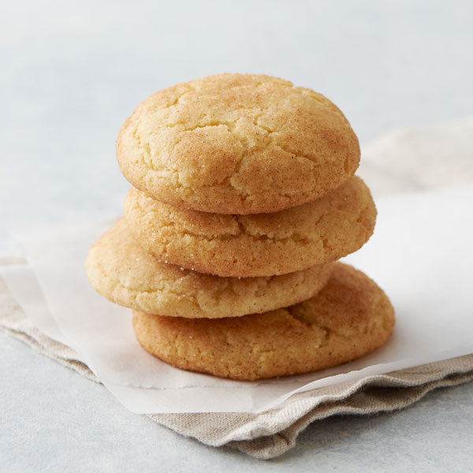

Gluten Free Snickerdoodle Cookies

Gluten Free Snickerdoodle Cookies
These cookies are soft and chewy with a lovely cinnamon sugar topping!
Ingredients
- 1 and 1/3 cups all purpose gluten free flour
- 1 cup sugar
- 1 teaspoon baking powder
- 1/4 teaspoon baking soda
- 1/4 teaspoon salt
- 1/4 cup room temperature butter
- 1 egg
- 1 and 1/2 teaspoons ground cinnamon
Steps
- Preheat oven to 350 degrees F (175 degrees C). Line 2 baking sheets with parchment paper.
- Combine flour, baking powder, salt, and baking soda in a bowl.
- Whisk butter and 3/4 cup sugar with an electric mixer in a separate bowl until soft and creamy, about 2 minutes. Add egg; whisk until well combined. Add flour mixture gradually; whisk on low speed until a soft dough is formed, about 2 minutes. Shape dough into 1 1/2-inch balls.
- Combine remaining 1/4 cup sugar with cinnamon in a bowl. Roll balls in cinnamon mixture and place on the prepared baking sheets.
- Bake in the preheated oven until edges are golden, 12 to 15 minutes. Cool on the baking sheet for 1 minute before removing to a wire rack to cool completely.